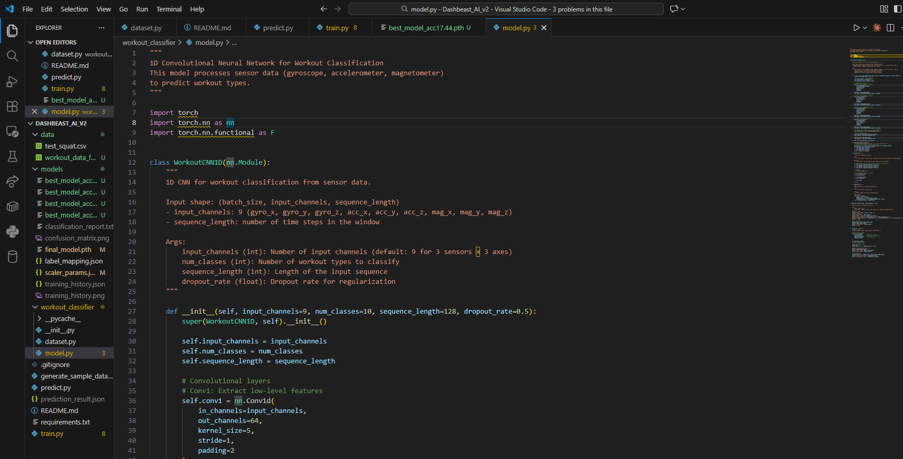

My role at Dashbeast Inc. was to create a Machine Learning Model that accepts
acceleration, gyroscopic, and magnetometer data in the X, Y, and Z directions.
Using that data the model will predict what exercise the user is performing,
such as a bench press, a squat, or a pushup. This model utilized a One-Dimensional
This model utilized a One-Dimensional Convolutional Neural Network Model.
The training of which involves the stacking of four Conv1D blocks with BatchNorm,
ReLU, and max-pooling to learn temporal patterns and downsample the sequence,
then flattening to two fully connected layers with dropout before a final linear
layer that outputs logits for each exercise class (trained with cross-entropy loss).

The model then outputs a .json file with what workout the model
predicts the user is performing alongside a confidence score for that prediction.
The .json file makes the ML feature module for other systems to interact with the
model easily. Overall, this project was a great experience in learning how to
build and deploy machine learning models for real world applications! I learned
more about data preprocessing, model architecture design using Pytorch, and model
evaluation through this internship that I could definitely recreate for personal or
professional projects.
Visit DashBeast's Website for more information about the company and its mission
Explore my other experiences!